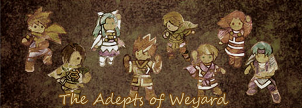
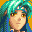
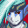
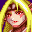
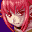
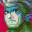
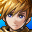
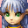
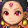

Forums
Welcome to The Adepts of Weyard, a Golden Sun fansite.
Ever since May 2003, The Adepts of Weyard has been bringing you all sorts of
content related to Nintendo's Golden Sun series - creative nonsense, useful and
interesting information, wacky humour, mind numbing crack and generally all
sorts of things. You will find a real variety of stuff in this website.
This site covers all three games released so far - Golden Sun, Golden Sun:
The Lost Age, and Golden Sun Dark Dawn. It is bought to you by Kyarorain,
webmistress and devoted Golden Sun fan.
Last Updated: 18th March 2018
 Isaac's Guidebook -
Reference guides
Isaac's Guidebook -
Reference guides
 Garet's
Archives - Golden Sun meta
Garet's
Archives - Golden Sun meta
 Ivan's Observatory - Random and insane humour
Ivan's Observatory - Random and insane humour
 Mia's Seaside Getaway - Couples
go on dates
Mia's Seaside Getaway - Couples
go on dates
 Felix's Valley
- Interviews, diaries, and other fun things
Felix's Valley
- Interviews, diaries, and other fun things
 Jenna's Campfire - Fanworks
by Kyarorain
Jenna's Campfire - Fanworks
by Kyarorain
 Sheba's
Crystal Ball - Information on the future of the Golden Sun series
Sheba's
Crystal Ball - Information on the future of the Golden Sun series
 Piers's Logbook - Profiles,
Japanese names, and other assorted trivia
 Saturos's Stupid Stuff -
Random humour and other idiocy

Menardi's Miscellany -
Secrets, and other interesting information

Karst & Agatio's Torture Chamber - Where Alex gets tortured a lot
 Alex's Organizer - Site
related things, including links and site updates
Alex's Organizer - Site
related things, including links and site updates

Matthew's Library -
Dark Dawn meta
Karis's Trivia - Dark
Dawn related trivia
Tyrell's Rec Room - Dark
Dawn humor
Rief's References - Dark Dawn
reference lists
Amiti's Love Shack -
Shipping, fanmail, and other personal matters
 Sveta's Theater - Golden Sun
media
Eoleo's Tavern - Random
banter, time travel and wacky hijinks
 Himi's Tent - Consultations
and creative uses of psychic powers
Affiliates:


Golden SunTM is a registered trademark of
Nintendo/Camelot (c) 2001.
The Adepts of Weyard is in no way endorsed by any
of these companies,
nor is this site official in any way. No copyright
infringement is intended.